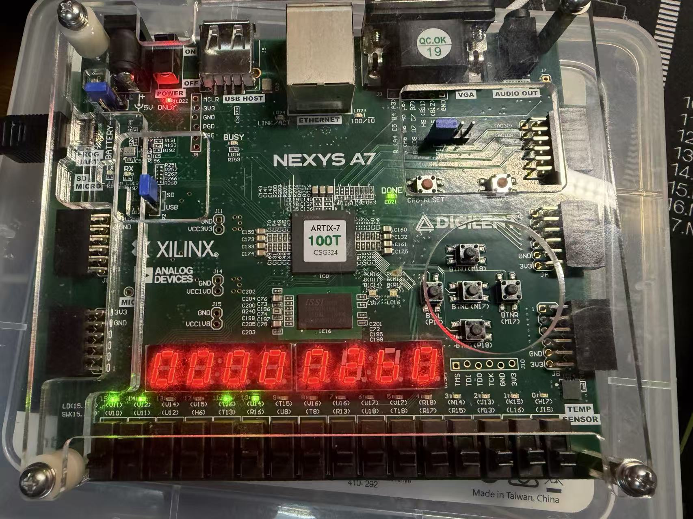
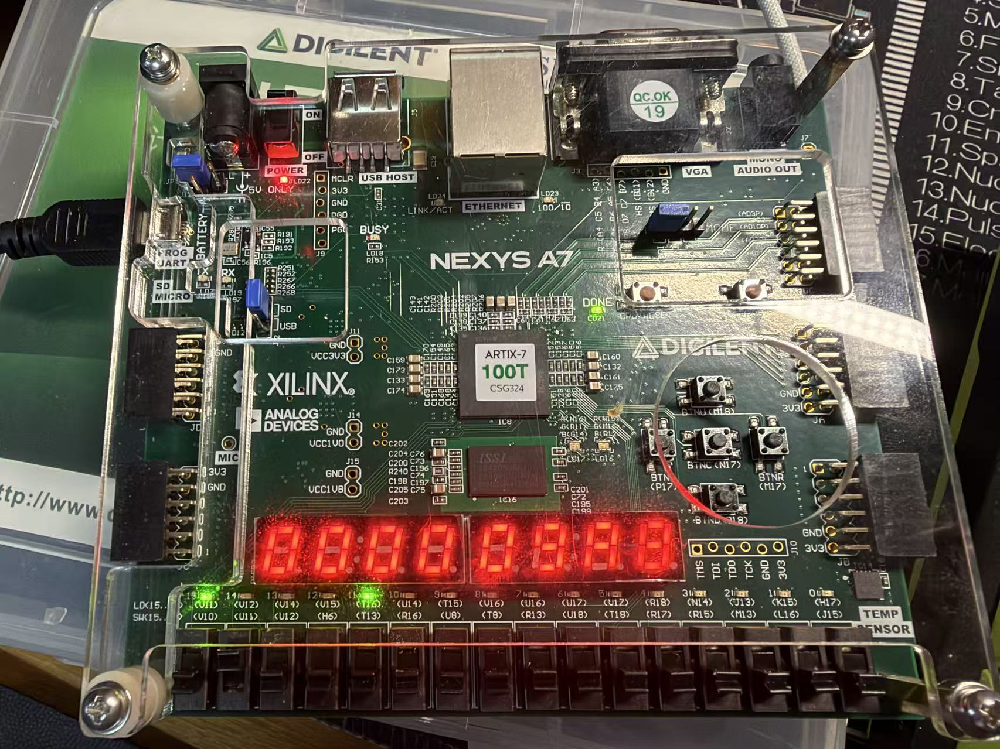

Course / Article
- 实验
- 2,492 字
- 2026.11.04
- 10 个小节
LAB1 & LAB2
LAB1
实验目的
在单周期CPU的基础上实现六级流水线
实验过程
由于本人基础不牢于是向AI寻求帮助让它在AGENT.md的限制下帮我解释一下实验的思路并参照着思路写了代码。
Checkpoint拿到的代码是一个有MultiFSM实现的单周期CPU，MultiFSM与流水线互斥，因此暂时注释掉Core.sv中的MultiFSM部分和stall部分（stall在LAB2实现）
随后在开头加入import PipelinePack::*打算用结构体实现，定义如下：
IF1IF2 if1if2_reg;
IFID ifid_reg;
IDEXE idexe_reg;
EXEMEM exemem_reg;
MEMWB memwb_reg;
随后实现，替代原来的inst、pc等，让每个寄存器的输入都是上一个寄存器的输出 pc->IF1->IF2->ID->EXE->MEM->WB 例如exemem_reg使用idexe_reg的输出
/*=====================exemem_reg=====================*/
always_ff @(posedge clk or posedge rst) begin
if (rst) begin
exemem_reg.valid <= 1'b0;
end else begin
exemem_reg <= '{
pc: idexe_reg.pc,
pc_4: idexe_reg.pc_4,
inst: idexe_reg.inst,
valid: idexe_reg.valid,
we_reg: idexe_reg.we_reg,
we_mem: idexe_reg.we_mem,
re_mem: idexe_reg.re_mem,
reg_data_1: idexe_reg.reg_data_1,
reg_data_2: idexe_reg.reg_data_2,
rd: idexe_reg.rd,
rs1: idexe_reg.rs1,
rs2: idexe_reg.rs2,
wb_sel: idexe_reg.wb_sel,
mem_op: idexe_reg.mem_op,
br_taken: br_taken,
alu_res: alu_res,
mem_wdata: data_package,
npc: (br_taken | idexe_reg.npc_sel) ? alu_res : idexe_reg.pc_4
};
end
end
然后在if1if2_reg和exemem_reg、memwb_reg前补上总线握手信号
然后cosim的接口交给memwb_reg
最后实现flush，条件为 idexe_reg.valid & (br_taken | idexe_reg.npc_sel)，assign imem_ift.r_request_valid = ~flush;
debug：
flush和rst的归0时没注意直接把结构<=0了发生编译错误，加上.valid后解决，这又导致了下一个bug，flush只清掉valid，npc_sel=1、reg_data_1/2都没被清理，因此如果pc_unit里一开始写else if(idexe_reg.npc_sel|br_taken) next_pc = alu_res;没有判断 valid，就会导致DUT 在跳转后把 0x0c重复提交，修改为如下代码后通过
else if(idexe_reg.valid & (idexe_reg.npc_sel | br_taken)) next_pc = alu_res;

下板前接上线：
assign cosim_core_info.valid_IF1 = ~flush;
assign cosim_core_info.valid_IF = if1if2_reg.valid;
assign cosim_core_info.valid_ID = ifid_reg.valid;
assign cosim_core_info.valid_EXE = idexe_reg.valid;
assign cosim_core_info.valid_MEM = exemem_reg.valid;
assign cosim_core_info.valid_WB = memwb_reg.valid;


思考题
对于syn.asm的fibonacci的如下代码段，请计算该loop在流水线CPU、SCPU、多周期CPU 各自的 CPI，对比三者的CPI。
000000000000000c <fibonacci>:
c: 00000013 addi zero,zero,0
10: 00000013 addi zero,zero,0
14: 002081b3 add gp,ra,sp
18: 00000013 addi zero,zero,0
1c: 00000013 addi zero,zero,0
20: 00000013 addi zero,zero,0
24: 003100b3 add ra,sp,gp
28: 00000013 addi zero,zero,0
2c: 00000013 addi zero,zero,0
30: 00000013 addi zero,zero,0
34: 00308133 add sp,ra,gp
38: fff20213 addi tp,tp,-1 # ffffffffffffffff <_end+0xfffffffffffffccf>
3c: 00000013 addi zero,zero,0
40: 00000013 addi zero,zero,0
44: 00000013 addi zero,zero,0
48: fc4012e3 bne zero,tp,c <fibonacci>
16条指令，5次循环，全部非访存，一共80条指令 流水线CPU：（4*（16+3）+16）/ 80 = 1.15 SCPU：80/80=1 多周期CPU：3 * 80/80=3
假设SCPU的时钟频率是100MHz，如果流水线想要有比单周期CPU更高的执行效率，它的时钟频率至少需要是多少？
115MHz
从时钟频率和CPI的角度解释，为什么多周期CPU优于单周期CPU，流水线CPU优于多周期CPU。
执行时间=指令数 * CPI * 时钟周期 单周期的CPI小，但是执行一个指令的时钟周期大 多周期的时钟周期小，但是CPI大，但是相乘后仍然比单周期小 流水线CPI小，时钟周期也小
心得感想
感谢助教给的checkpoint和仓库里各种提前写好的结构，帮大忙了。
LAB2
实验目的
在流水线CPU的基础上实现forwarding和stall来处理冲突
实验过程
声明两个fwd用于forwarding，并在代码最后面写出forwarding selector if EXE 段那条指令要写同一个寄存器 → 用它的结果；else if MEM 段那条要写 → 用它的结果；else if WB 段那条要写 → 用它的写回值 hit_rs1/2就是该段有有效指令且会写寄存器且rd!=0且rd!=rs1且不是load
assign EXE_hit_rs1 = idexe_reg.valid & idexe_reg.we_reg & (idexe_reg.rd != 5'b0)
& (idexe_reg.rd == rs1) & ~idexe_reg.re_mem;
assign MEM_hit_rs1 = exemem_reg.valid & exemem_reg.we_reg & (exemem_reg.rd != 5'b0)
& (exemem_reg.rd == rs1);
assign WB_hit_rs1 = memwb_reg.valid & memwb_reg.we_reg & (memwb_reg.rd != 5'b0)
& (memwb_reg.rd == rs1);
assign EXE_hit_rs2 = idexe_reg.valid & idexe_reg.we_reg & (idexe_reg.rd != 5'b0)
& (idexe_reg.rd == rs2) & ~idexe_reg.re_mem;
assign MEM_hit_rs2 = exemem_reg.valid & exemem_reg.we_reg & (exemem_reg.rd != 5'b0)
& (exemem_reg.rd == rs2);
assign WB_hit_rs2 = memwb_reg.valid & memwb_reg.we_reg & (memwb_reg.rd != 5'b0)
& (memwb_reg.rd == rs2);
/*===================== forwarding =====================*/
always_comb begin
fwd_1 = read_data_1;
fwd_2 = read_data_2;
if (EXE_hit_rs1) fwd_1 = (idexe_reg.wb_sel == WB_SEL_PC) ? idexe_reg.pc_4 : alu_res;
else if (MEM_hit_rs1) fwd_1 = (exemem_reg.wb_sel == WB_SEL_PC) ? exemem_reg.pc_4
: (exemem_reg.wb_sel == WB_SEL_MEM) ? data_trunc
: exemem_reg.alu_res;
else if (WB_hit_rs1) fwd_1 = wb_val;
if (EXE_hit_rs2) fwd_2 = (idexe_reg.wb_sel == WB_SEL_PC) ? idexe_reg.pc_4 : alu_res;
else if (MEM_hit_rs2) fwd_2 = (exemem_reg.wb_sel == WB_SEL_PC) ? exemem_reg.pc_4
: (exemem_reg.wb_sel == WB_SEL_MEM) ? data_trunc
: exemem_reg.alu_res;
else if (WB_hit_rs2) fwd_2 = wb_val;
end
/*=====================================================*/
 LAB1的访存全在EXE段，EXE发完请求后直接到MEM再到WB，LAB2的话要把发请求挪到MEM和WB之间并等待回复，然后才WB
那么先将dmem_ift的一系列信号从原来的idexe_reg改为exemem_reg
LAB1的访存全在EXE段，EXE发完请求后直接到MEM再到WB，LAB2的话要把发请求挪到MEM和WB之间并等待回复，然后才WB
那么先将dmem_ift的一系列信号从原来的idexe_reg改为exemem_reg
assign dmem_ift.r_request_valid = exemem_reg.valid & exemem_reg.re_mem & ~req_sent;
assign dmem_ift.r_request_bits = '{raddr: exemem_reg.alu_res};
assign dmem_ift.w_request_valid = exemem_reg.valid & exemem_reg.we_mem & ~req_sent;
assign dmem_ift.w_request_bits = '{waddr: exemem_reg.alu_res, wdata: exemem_reg.mem_wdata, wmask: mask_mem};
然后把MaskGen移到MEM，也就是输入改为exemem_reg 然后新增一个req_sent，请求后valid立刻置零
/*===================== req_sent =====================*/
assign r_req_fire = dmem_ift.r_request_valid & dmem_ift.r_request_ready;
assign w_req_fire = dmem_ift.w_request_valid & dmem_ift.w_request_ready;
assign mem_done = (exemem_reg.re_mem & dmem_ift.r_reply_valid & dmem_ift.r_reply_ready)
| (exemem_reg.we_mem & dmem_ift.w_reply_valid & dmem_ift.w_reply_ready);
assign mem_wait = exemem_reg.valid & (exemem_reg.re_mem | exemem_reg.we_mem) & ~mem_done;
always_ff @(posedge clk or posedge rst) begin
if (rst) begin
req_sent <= 1'b0;
end else if (r_req_fire | w_req_fire) begin
req_sent <= 1'b1;
end else if (~mem_wait) begin
req_sent <= 1'b0;
end
end
然后开始给每个寄存器的flush之前加stall保持，定义两个stall，stall_mem用于等内存，load_use用于等数据，stall_front是stall_mem | load_use。
debug：
一开始在memwb_reg里的stall也写成保持了，但这会使同一条指令反复生效，改memwb_reg.valid <= 1'b0后测试通过



思考题
分析 forward 和 stall 两种技术各自的优缺点，可以从 CPI、时钟频率、元器件开销等角度进行分析
stall里会有许多无效气泡导致CPI增大，forwarding则不会 forwarding在选择器里加入了复杂逻辑，会导致时钟频率下降，stall则不会
真实世界的内存通常只有一个读写口，且每次内存读写都会消耗若干个周期。假设在我们的实验中采用这种内存，且通过一个模块将该唯一的读写口转化为两个内存接口 imem_ift 和 dmem_ift 暴露给 Core，那么它们之间会产生结构竞争。你可以设计一个状态机来解决这个问题吗？不需要写代码，说明你的设计即可，给出各个状态的含义、所做的事情以及状态转移条件。
| 状态 | 执行 | 条件 |
|---|---|---|
| 空闲 | 谁请求给谁，同时请求则给imem | |
| imem正在使用 | dmem的r/w_request_ready置0 |
r_reply_valid & r_reply_ready成立 |
| dmem正在使用 | imem的r_request_ready置0，stall_front |
reply fire |
| #### AXI4 是 ARM 提出的片上总线标准，被广泛用于 CPU 与内存、外设之间的互连。请你自行搜索了解 AXI4-Lite 总线的组成和特性，简要介绍它的总线协议。我们实验中实际采用的 mem_ift 总线和它有哪些异同？ | ||
| AXI4是一种面向地址映射通信需求的，允许最大256轮数据突发的总线协议。而AXI4_Lite是一种轻量型的面向地址映射通信需求的，但不允许突发的总线协议。 | ||
| 1、读地址通道：用于发送读请求的地址和传输属性 | ||
| 2、读数据通道：从设备通过该通道返回读取的数据和状态 | ||
| 3、写地址通道：主设备通过该通道发送写请求的地址和传输属性 | ||
| 4、写数据通道：主设备通过该通道发送待写入的数据 | ||
| 5、写响应通道：从设备通过该通道返回写操作状态 |
同：都用valid-ready握手/读写分离 异：AXI4-Lite有五个通道，mem_ift四组通道/AXI4-Lite有事务ID、乱序，mem_ift没有
下面这段汇编在你的六级流水线上运行：
addi sp, sp, -16
sd x0, 0(sp) # 计数器初值 = 0
li t0, 3 # 循环 3 次
loop:
ld a0, 0(sp) # 读计数器
addi a0, a0, 1 # 加一
sd a0, 0(sp) # 写回
addi t0, t0, -1
bne t0, x0, loop
ld a1, 0(sp)
j ...
请回答：在 lab2 的内存设计下（dmem 每次访存会随机等待 0~4 拍才返回，即最坏第 5 拍返回），这段代码需要的周期数的最小值和最大值分别是多少？给出计算过程。
访存 8 次、load-use 3 次、分支 2 次 最小值 20 + 8 * 0 + 3 + 6 = 29 最大值 20 + 8 * 4 + 3 + 6 = 61
心得体会
不知道说什么了现在是凌晨三点半我已经做晕了